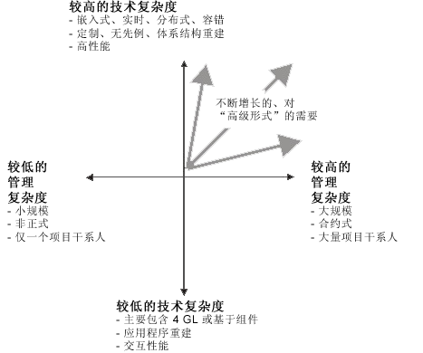

| RUP 简介 |
|
Rational Unified Process（或 RUP）是什么？RUP 的实质Rational Unified Process®（RUP®）实质上是与成功开发软件有关的。定义 RUP 的中心元素有三个：
Rational Method Composer（RMC）平台经过多年的开发努力，RUP 已经演化为一个丰富的流程工程平台，称为 Rational Method Composer（RMC）。RMC 使团队能够定义、配置、定制和实施一致的流程。 平台的关键元素为：
谁应使用 RUP？如果您自行开发和部署对贵组织的成功至关重要的软件，RUP 可以提供帮助。RUP 产品开发时考虑了两组主要用户：
软件开发执行人员可以在 RUP 中定义的角色中找到关于要求他们做什么的指导信息。从事 RUP 软件工程项目的执行人员被赋予在 RUP 中定义的一个或多个角色，其中每个角色划分出该角色负责的一组任务和工作产品。同时还提供了关于这些角色如何根据制定已配置流程（称为交付流程）所需的活动进行协作的指导信息。。 流程工程执行人员可以找到关于定义、配置、定制和实施工程流程的指导信息。RUP 产品系列提供了很多工具，它们支持并简化了工程流程的定义、配置和定制。 RUP 产品中还提供大量视图，这些视图关注不同组的软件工程执行人员。 为您的项目配置 RUP 吗？RUP 的一种核心背景实践是迭代而递增式的开发。这种实践也有利于在开始使用 RUP 时记住：不要尝试一次“做”所有 RUP 事情。请采用一种实施、学习和使用 RUP 的自迭代和递增式方法。开始先评估您的现有流程并选择一到两个您要改进的关键领域。先使用 RUP 改进这些领域，然后在稍后的迭代或开发周期中进行其他领域的递增式改进。 请访问以下链接以了解相应主题的更多信息：
为什么要使用 RUP？RUP 向软件开发执行人员提供一种基于标准、但又可配置的流程环境。该流程环境：
RUP 本质上是软件工程实践的集合体，这些实践将不断地定期改善以反映行业实践变化。 作为软件开发项目中的项目干系人，RUP 使您可以了解对开发工作的期望。它提供了一个术语词汇表和一个知识百科全书，以帮助您向软件开发团队有效地传达您的需要。 针对软件开发执行人员，这个流程环境提供了一个所有软件开发团队成员都可以共享的、公共的中心流程定义，有助于确保团队成员之间进行明确无误的沟通。这通过明确您的职责而帮助您在项目团队中扮演期望的角色。作为通用的软件工程参考，RUP 提供了新手和资深执行人员等都很看重的大量关于软件开发实践的指导信息。即使您是一个单枪匹马的编程员，您也将发现 RUP 在构造世界级软件方面是个很好的导师。 作为经理或团队负责人，RUP 向您提供一个流程，您可以通过该流程与员工进行有效沟通，以及相应地管理和控制他们的工作。 作为流程工程师，RUP 向您提供很好的体系结构基础和大量材料，您可以用它们来构造您的流程定义，从而能够按需配置和扩展这个基础。这将可以节省您从头开始创建这样一个流程定义时所需要的大量时间和工作。 何时应使用 RUP？ 可以从新软件项目一开始就使用 RUP，也可以在初始项目结束后的后续开发周期中继续使用。但是，使用 RUP 的方式需要按您的需要进行相应变化。有一些注意事项会决定使用 RUP 不同部件的时机和方式： 从何处可以更多地了解 RUP？以下资源可以帮助您加快速度并快速掌握 RUP：
|
© Copyright IBM Corp. 1987, 2006. All Rights Reserved. |